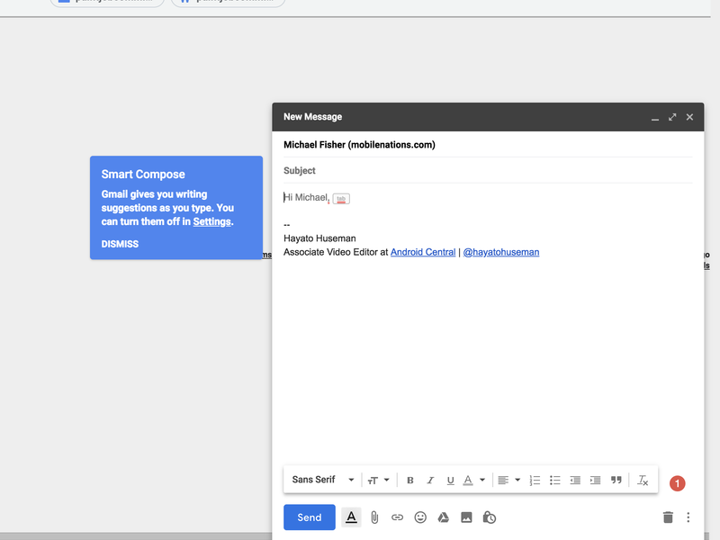

Click Here To Return To Topics
Spam email used to be a much
bigger problem than it is today. Thanks to new A.I. technology implemented by tech
companies and email service providers, like Google and Microsoft, spam is now becoming
a thing of the past!
Click Here To Learn More
Do you ever wonder how your email or
texting app's search results are so accurate it almost seems like it's reading
your mind? Find out more about how companies are using A.I. technology to make searching
more accurate and efficient.
Click Here To Learn More
When auto-complete features first
came to the market, they were less than perfect. See how A.I. has turned around auto-complete
technology to become less of a joke and more of a time-saver.
Click Here To Learn More
